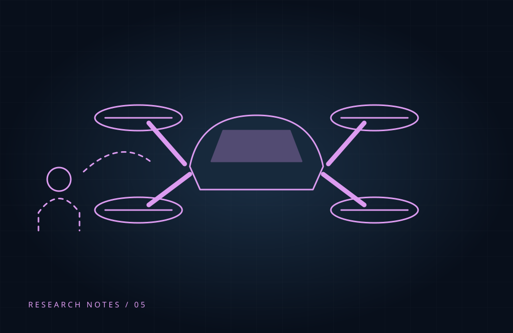

From Commands to Communication with Drones
Why controlling a drone and understanding its behavior are different design challenges, informed by a human–drone interaction survey.

More than a controller
The 2019 survey describes control approaches including conventional devices, gestures and voice. It also identifies communication and interaction distance as important areas of study.
A human-centered interpretation
An interface can accept a command yet leave the person uncertain about what happens next. A useful design question is therefore how the drone communicates its intention and response.
A question for future systems
Which feedback would help a first-time user understand an approaching drone? This is a design reflection prompted by the survey, not a new finding from its authors.